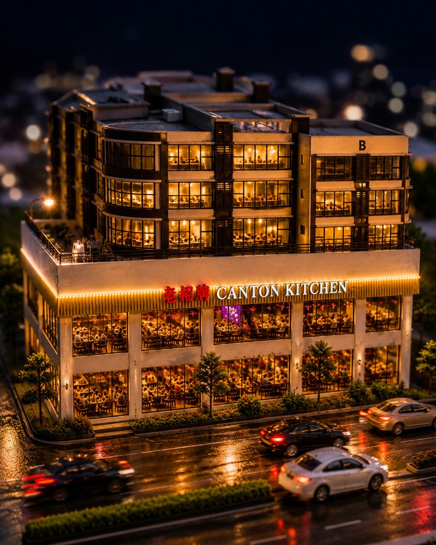
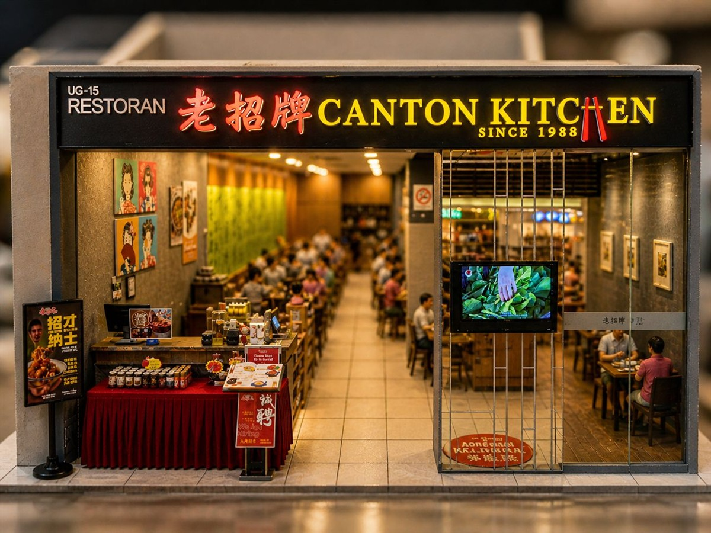
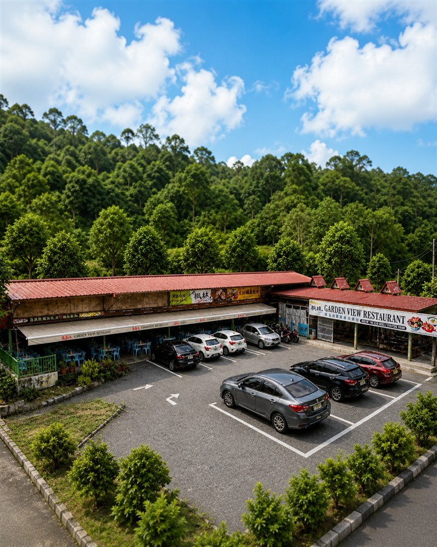

 Seri Gembira Avenue · Happy Garden LG 1-1, Seri Gembira Avenue, No.6, Jalan Senang Ria, Taman Gembira, 58200 Kuala Lumpur. 03-79719309 / 012-9201801 查看菜单 路线
 Paradigm Mall UG-15, Upper Ground Floor, Paradigm Mall, No.1, Jalan SS7/26A, Kelana Jaya, 47301 Petaling Jaya. 03-27097625 / 012-3508802 查看菜单 路线
 Garden View Restaurant Lot 19326 & 19327, Pesona Heights, Kampung Bukit Tinggi, 28750 Bentong, Pahang. 092330282 / 012-6629300 查看菜单 路线